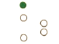
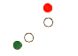

Влачен незабележим или частично потопен обект, по-къс от 100м.и ширина, по-малка от 25м
Влачен незабележим или частично потопен обект, по-къс от 100м.и ширина, по-голяма от 25м
Влачен незабележим или частично потопен обект, по-дълъг от 100м.и ширина, по-малка от 25м
Влачен незабележим или частично потопен обект, по-дълъг от 100м.и ширина, по-голяма от 25м
Ветроходен кораб под ветрила, на който работи и механичния двигател
Кораб, зает с тралене
Влачен полупотънал, или частично потопен обект
Кораб, ограничен от своето газене
Кораб, зает с риболов, с изключение на корабите, заети с тралене
Риболовен траулер, вдига мрежите си
Риболовен траулер, по-къс от 50м., движи се срещу нас
Кораб, без управление
Влачен полупотънал, или частично потопен обект, влекалото е по-дълго от 200м
Кораб, движи се едновременно с платна и мех. двигател
Кораб, без управление
Кораб, зает с риболов
Риболовен траулер, по-къс от 50м., спуска трала си, движи се срещу нас
Кораб, зает с риболов, с изключение на корабите, заети с тралене
Риболовен траулер, по-къс от 50м., обира трала си, движи се срещу нас
Риболовен траулер, по-къс от 50м., закачил трала си
документ регламентиращ правилния отговор: GOLREG (rule26/b) ANNEX II (2/II)
117. Кой кораб носи тези светлини?:
Риболовен траулер,закачил трала си, няма ход относно водата
Риболовен траулер, по-къс от 50м., обира трала си
Риболовен траулер, по-къс от 50м., спуска трала си
Кораб, зает с риболов, с изключение на корабите, заети с тралене
документ регламентиращ правилния отговор: GOLREG (rule26/b) ANNEX II (2/III)
118. Кой кораб носи тези светлини?: 
Кораб, зает с риболов, с изключение на корабите, заети с тралене
Риболовен траулер, закачил трала си
Риболовен траулер, обира трала си
Риболовен траулер, спуска трала си, виждаме кърмата му
документ регламентиращ правилния отговор: GOLREG (rule26/b) ANNEX II (2/I)
119. Кой кораб носи тези светлини?: 
Риболовен траулер, по-къс от 50м., обира трала си
Риболовен траулер, по-къс от 50м., спуска трала си
Риболовен кораб, който не е траулер, мрежите му са над 150м. от него
Риболовен траулер, спуска трала си, виждаме кърмата му
Риболовен кораб, който не е траулер, няма ход относно водата или риболовува на котва
Риболовен траулер, спуска трала си, виждаме кърмата му
Ветроходен кораб на ход, виждаме кърмата му
Кораб без управление